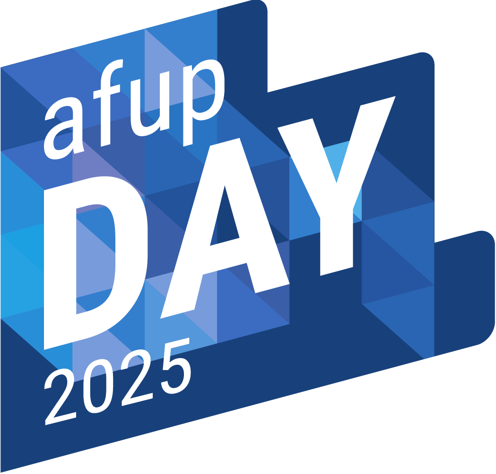

Meetup AFUP
Avril 2025
- Association créée en 2001 pour promouvoir PHP et son écosystème
- Organise des conférences (Forum PHP, AFUP Day)
- environ 15 antennes dans toute la France
- afup.org/association/antennes
- Meetup tous les mois ⏰
- Du PHP et son environnement
- Et avec des ap√©ros ! üçª
Nous aider ?

- ⚠️ Speakers ! ⚠️
- https://conference-hall.io/meetup-afup-lorraine
- Locaux
- Sponsoring (manger && boire)

Lorraine Tech Hub
- Acteurs de la tech en Lorraine
- Discussion, veille, entraide, recrutement
- Associations
- Apéros Web Nancy
- AFUP Lorraine
- Apéro agiles
Tech F'Est 2025

- Vendredi 13 Juin 2025
- IUT Charlemagne, Nancy
- Billets en vente
- Speakers annoncés
Actu locale
- Optimisation de la Pagination Multi-Source pour le Suivi des Virements - Apéros Web Nancy, 30 avril 2025 - 19h à la plantation
- Play14, journées de conférence Agile (15 au 17 mai, 140€): https://play14.org/events/nancy-2025-05
Actu Antenne
- Prochain meetup à Nancy - info à venir
Actu AFUP

AFUP Day 2025

- Vendredi 16 mai 2025
- Lille - Lyon - Poitiers
- Programmes publiés! (Le modérateur de l'antenne fait une conférence à Lille :))
Billetterie ouverte !
Actu PHP

NativePHP est en v1

PHP 8.5
9 RFC validées dont 7 implémentées pour 8.5
Inclus les attributes sur les constantes !
N'hésitez pas à soutenir la PHP foundation!

PHP Core Security Audit Results
27 problèmes identifiés, dont 17 impliquant des problèmes de sécurité :
- 3 haute sévérité
- 5 sévérité moyenne
- 9 sévérité basse
4 sont identifiées en CVE : CVE-2024-9026, CVE-2024-8925, CVE-2024-8928, CVE-2024-8929
Aujourd'hui !
- De la paperasse au code : Domptez vos flux métier avec Symfony Workflow !, par Rémi Schillinger
Et pour finir
Adimeo pour l'apéro convivial
Merci à eux !
Bon meetup !